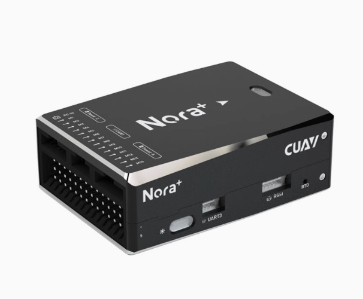

S7硬件介绍
1.技术规格
S7产品视图

| 参数 | 数值 |
|---|---|
| 重量 | 2.8kg(含电池，含负载) |
| 尺寸 | 14001000255mm |
| 最大起飞重量 | 3.5kg |
| 续航 | 30min |
| 抗风等级 | 4级 |
| 工作温度 | -10~40°C |
2.硬件介绍
① 飞控
Nora+飞控

| 参数 | 数值 |
|---|---|
| 处理器 | STM32H743 |
| 加速计 | ICM-42688-P |
| 陀螺仪 | ICM-20689*2 |
| 磁罗盘 | RM3100 |
| 气压计 | MS5611*2 |
| 尺寸 | 466422mm |
| 重量 | 91g |
② GPS
C-RTK 9Ps

| 参数 | 数值 |
|---|---|
| 卫星接收器类型 | 184通道ZED-F9P（ublox） |
| 电子罗盘 | IST8310 |
| 导航卫星系统 | 北斗、伽利略、格洛纳斯、GPS |
| 并发（收）导航卫星系统 | 4 |
| 卫星频段 | GPS-L1C/A(1575.42MHz）<br>GPS-L2C（1227.6MHz）<br>GLONASS-L1OF（1602MHz)<br>GLONASS-L2OF（1246MHz）<br>GALILEO-E1B/C（1575.42MHz）<br>GALILEO-E5b(1207.14MHz）<br>BeiDou-B1I（1561.098MHz)<br>BeiDou-B2I(1204.14MHz)<br>QZSS-L1C/A(1575.42MHz)<br>QZSS-L2C（1227.6MHz） |
| 导航刷新率(MAX) | RTK 20Hz <br>RAW 25Hz <br>PVT 25Hz <br>（最大限制与并发器设置有关；详情请查看后续导航刷新率章节） |
| 定位精度 | RTK定位：0.01m+1ppm CEP <br>单点定位：1.5m CEP <br>SBAS辅助定位：1.0m CEP |
| 收敛时间 | RTK<60s |
| 捕获卫星 | 冷启动<24s <br>热启动<1s |
| 灵敏度 | 追踪&导航：–167dBm <br>冷启动：–148dBm <br>热启动：–157dBm <br>再次捕获：–160 dBm |
| 抗干扰 | 主动式CW检测与消除 |
| 安全性 | 高级反欺骗算法 |
| 天线增益 | 移动端：2dBi <br>基站端：5dBi |
| PPK | 不支持 |
| 双天线测向 | 支持（需两个定位模块）；航向精度：0.4edg(参考值） |
| RTK基站/移动端切换 | 支持 |
| 串口 | 2个UART |
| USB | 1 |
| 数据协议 | NMEA、UBX binary、RTCM 3.x |
| 工作电压 | 4.5 V 到 6 V |
| 工作温度 | –40 °C 到 +85 °C |
③ 数传

| 参数 | 数值 |
|---|---|
| 最大通讯距离 | 30km |
| 通讯通道 | 16个 |
| 数传支持飞控 | PIX、APM、雷迅或其他任何带UART数据传输功能的飞控 |
| 图传支持地面站 | QGC、SIYI FPV等 |
④ 机载电脑
树莓派 4B

| 参数 | 数值 |
|---|---|
| 名称 | raspberry pi 4B |
| SOC | Broadcom BCM2711 |
| CPU | 64-位1.5GHz四核（28nm工艺） |
| 蓝牙 | 蓝牙5.0 |
| GPU | 500 MHz VideoCore VI |
| 内存 | 1 - 4GB DDR4 |
| 影像输出 | 双micro HDMI端口 |
| 最大分辨率 | 4K 60 Hz + 1080p或 2x 4K 30 Hz |
| USB端口 | 2个USB 3.0 / 2x USB 2.0 |
| 有线网络 | 千兆以太网 |
| 无线 | 802.11ac（2.4 / 5 GHz），蓝牙5.0 |
| 充电端口 | USB Type-C |
| 电力需求 | 3A，5V |
| 多媒体 | H.265 (4Kp60 decode); H.264 encode(1080p30/1080p60); OpenGL ES 3.0 graphics |
⑤ 遥控器

| 参数 | 数值 |
|---|---|
| 物品 | TX15无线电控制器 |
| 尺寸 | 178 168 81毫米 |
| 重量 | 605克（不含电池） |
| 频率 | 2.400GHz 或 Sub-G 900MHz |
| 内部射频 | ELRS 2.4GHz / 次G频率900MHz |
| 支持的协议 | Express-LRS |
| 冷却风扇 | 是 |
| 发射模块 | 内置ELRS |
| 内置闪存容量 | 4GB |
| 内置麦克风 | 是（未来扩展） |
| 内置陀螺仪 | 是（ICM-42607-C） |
| MicroSD卡（不含） | 32GB/FAT32（插入MicroSD卡会禁用内置闪存） |
| 天线增益 | 2dB（发射功率可调） |
| 电流 | 最大功率输出时875mA电流 |
| 电压范围 | 6.6 - 8.4V 直流 |
| 无线电固件 | EdgeTX（发射机）（需要3.0.0版本或更高版本） |
| 模块固件 | ExpressLRS |
| 频道 | 最多16个频道（视接收机而定） |
| 显示屏 | 3.5英寸IPS触摸屏（480 x 320分辨率） |
| 电池 | 7.4伏2节锂聚合物电池 / 两块3.7伏18650锂离子电池 / 21700mAh 5000mAh电池（不含电池） |
| 连接方式 | USB-C |
| 万向节 | V5.0 霍尔传感器万向节（标准） |
| 万向节棒 | M4 |
| 升级方式 | USB-C（UF2） |
| 模块舱 | 兼容JR的模块舱，用于附加模块 |
⑥ 分电板

| 参数 | 数值 |
|---|---|
| 工作电压 | 11.1V - 25.2V（3S-6S锂电池） |
| 工作电流 | 3A |
| 主要端口 | 12V供电，5V供电，舵机供电，飞控6pin电流计 |
| 应用 | 固定翼、多旋翼、机器人、车、船 |
⑦ 空速计

| 参数类别 | 具体参数 |
|---|---|
| 核心传感器 | 4525DO高精度空速传感器 |
| 测量范围 | 0-50m/s |
| 适配飞控 | PX4、APM固件飞控 |
| 工作电压 | 5V（飞控直插供电） |
| 工作温度 | -10℃-85℃ |
| 产品重量 | 3.7±0.1g（仅模块，不含硅胶管和金属管） |
| 输出信号 | I2C |
| 模块尺寸 | 22 16 10.4 |